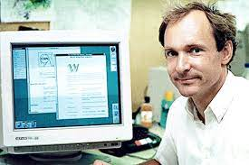

IIT Bombay Mood Indigo Future Hacks
Topic : WWW as one of the invention
The World Wide Web -- also known as the web, WWW or W3 -- refers to all the public
websites or pages that users can access on their local computers and other devices through
the internet. These pages and documents are interconnected by means of hyperlinks that
users click on for information. This information can be in different formats, including text,
images, audio and video.Most web documents and pages are created using Hypertext Markup Language (HTML),
a text-based way of describing how content within an HTML file is structured.
HTML describes the structure of web pages using elements or tags and displays the
content of these pages through a web browser.
The development of the World Wide Web was begun in 1989 by Tim Berners-Lee and his colleagues at CERN,
an international scientific organization based in Geneva, Switzerland. They created a protocol,
HyperText Transfer Protocol (HTTP), which standardized communication between servers and clients.
Their text-based Web browser was made available for general release in January 1992.
In 1989 Tim Berners Lee and his team has re-designed SGML and named it HTML.

Tim Berners-Lee, in full Sir Tim Berners-Lee, (born June 8, 1955, London, England),
British computer scientist, generally credited as the inventor of the World Wide Web.
In 2004 he was awarded a knighthood by Queen Elizabeth II of the United Kingdom and the
inaugural Millennium Technology Prize (€1 million) by the Finnish Technology Award Foundation.
From 1991 to 1993 Berners-Lee evangelized the Web. In 1994 in the United States he
established the World Wide Web (W3) Consortium at the Massachusetts Institute of Technology’s
Laboratory for Computer Science. The consortium, in consultation with others, lends oversight
to the Web and the development of standards. In 1999 Berners-Lee became the first holder of the
3Com Founders chair at the Laboratory for Computer Science. His numerous other honours included
the National Academy of Engineering’s prestigious Charles Stark Draper Prize (2007).
Berners-Lee was the author, along with Mark Fischetti, of Weaving the Web: The Original Design
and Ultimate Destiny of the World Wide Web (2000).
1.In college, Berners-Lee built a computer out of an old television set.
2.Before settling on “the Web,” Berners-Lee thought of the names “Information Mesh”,
“The Information Mine”, and “Mine of Information”.
3.In 1990, Berners-Lee wrote the first browser and editor, called “WorldWideWeb.app,”
which ran on a NeXT computer. Steve Jobs had left Apple to create NeXT Inc., and later returned to Apple.
4.WorldWideWeb, which took 2 months to write, was also an editor, so the earliest vision of the Web
was one where anyone could contribute.
5.The first Web site was info.cern.ch, hosted by CERN, on Tim’s desktop computer.
6.The early Web pages from 1992 were preserved by Berners-Lee and W3C, but CERN did
not serve them at theoriginal address until in April 2013.
7.On 30 April 1993, CERN put WorldWideWeb in the public domain, a critical milestone
in enabling broad adoption of the Web.
8.In 2004, W3C adopted an industry-leading Royalty-Free patent policy to further Berners-Lee’s
vision of the Web as an open platform for innovation.
9.65.6 percent of the entire world's population has internet access
10.Fun-fact: I am participating in this contest because of WWW and
you hosted this contest because of WWW.